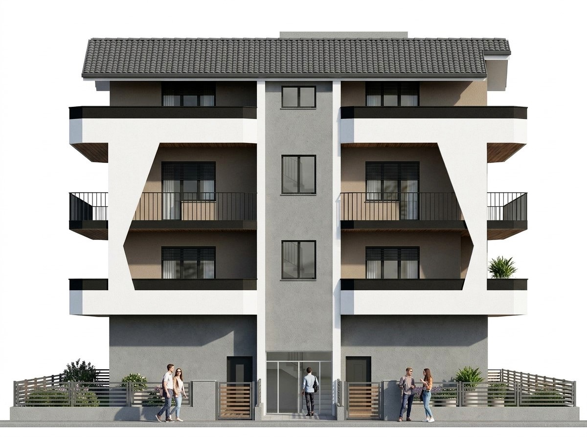
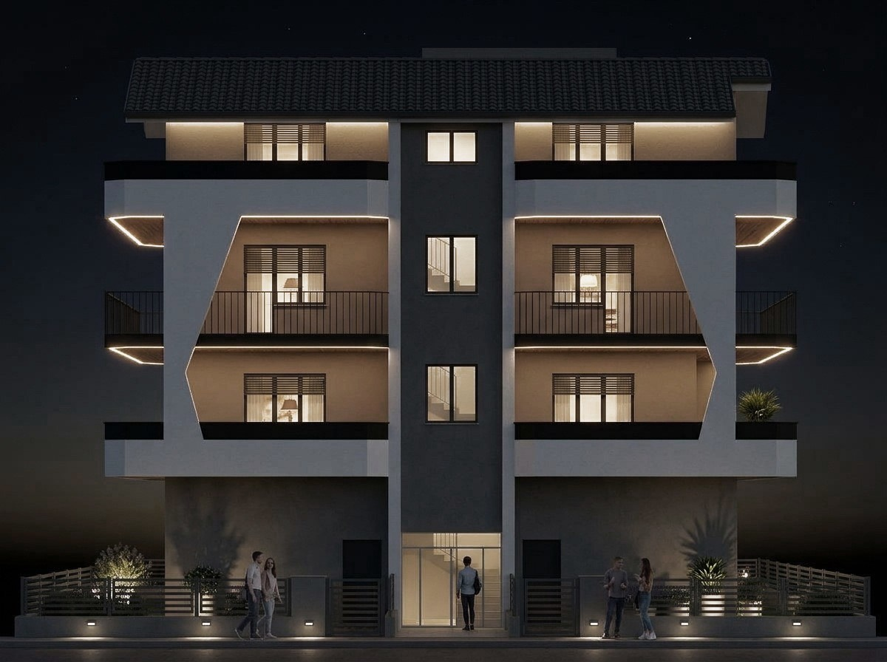
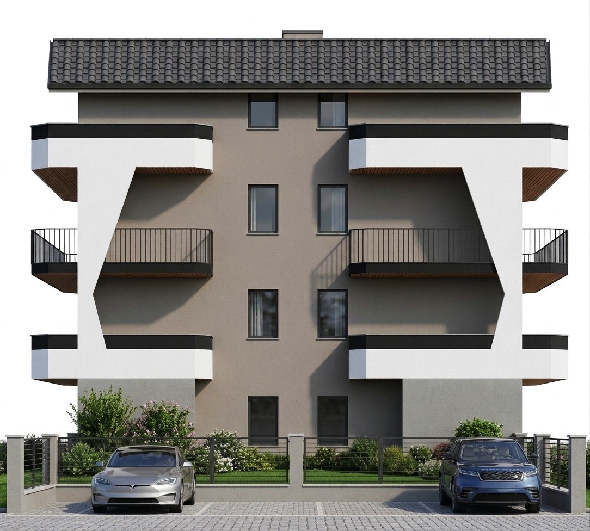
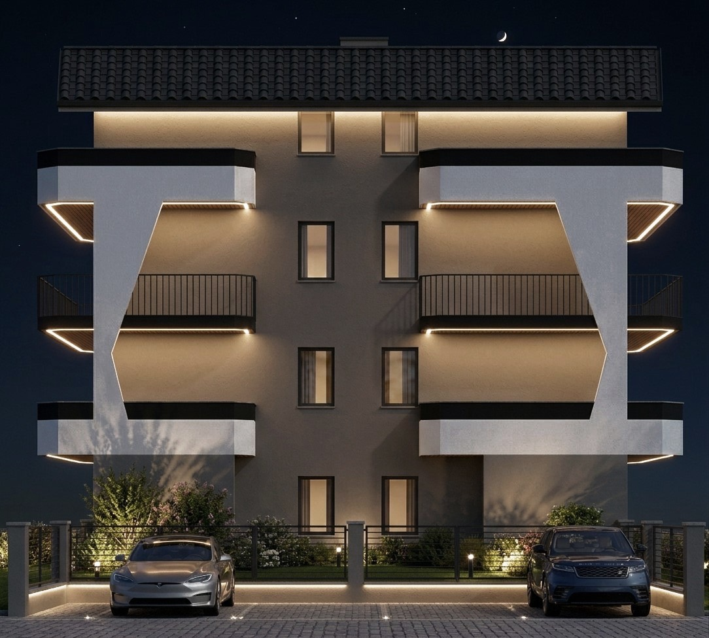
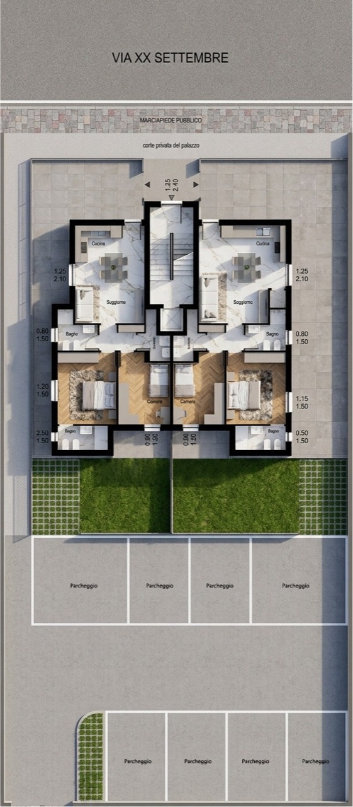

Per la tua attività.
La proposta commerciale valorizza le vetrine e l’affaccio sulla strada.




Tre livelli residenziali, un piano strada. Tante possibilità.
Due appartamenti indipendenti, un’unica casa più ampia o una soluzione con giardino.

Due abitazioni speculari con soggiorno e cucina, due camere e servizi.
Configurazioni indicative, da definire con il progettista.

Nel sottotetto, una casa con una grande zona giorno e terrazzi sui diversi lati.
Soluzione del sottotetto. Configurazione da definire con il progettista.

La nuova proposta al piano terra: due abitazioni con spazi esterni e un’area dedicata ai parcheggi.
Distribuzione degli spazi e assegnazione di giardini e posti auto da definire con il progettista.
Uno spazio commerciale o una soluzione residenziale.

La proposta commerciale valorizza le vetrine e l’affaccio sulla strada.
La nuova proposta mostra due abitazioni con giardini. Da valutare anche un’unica casa più ampia.
Guarda la piantaDestinazione e suddivisioni da definire con il progettista. Il locale illustrato è un’ipotesi.
Film di concept. Rendering e planimetrie mostrano gli aggiornamenti del progetto.
Per informazioni su Palazzina Arabona,
parla con Shala Costruzioni.